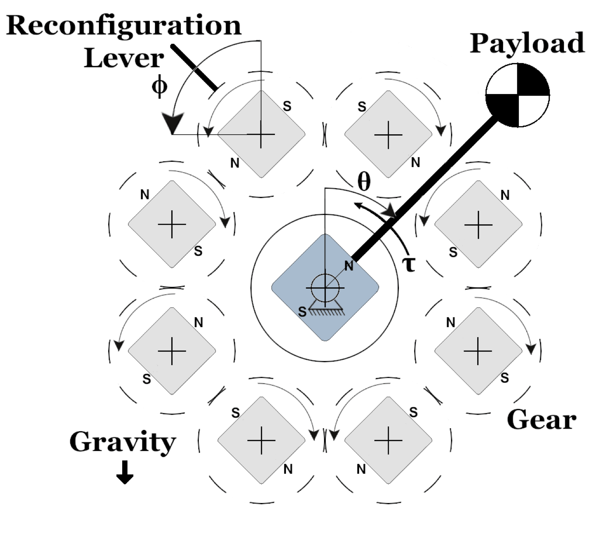
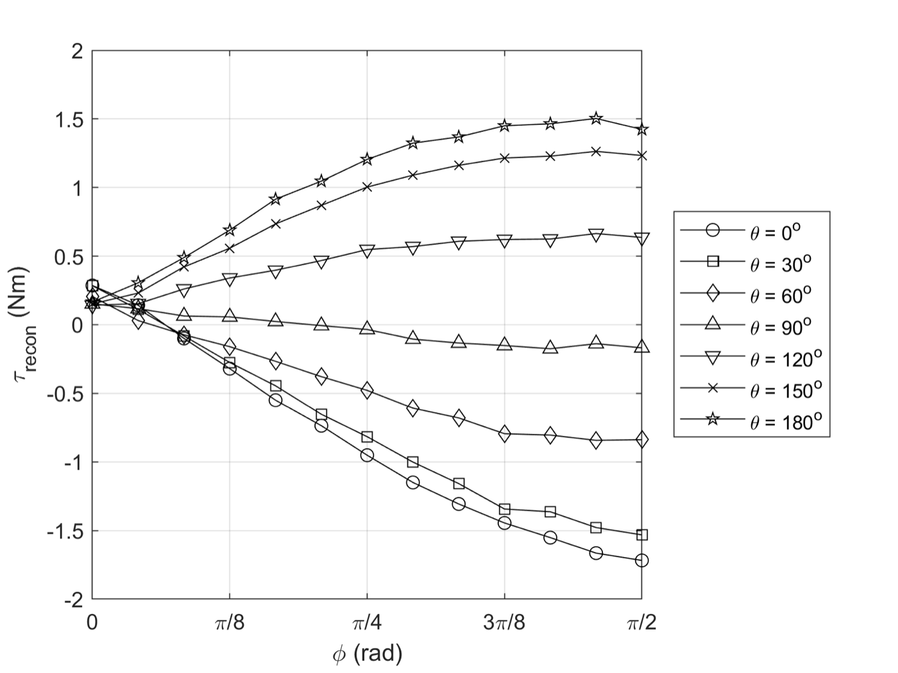
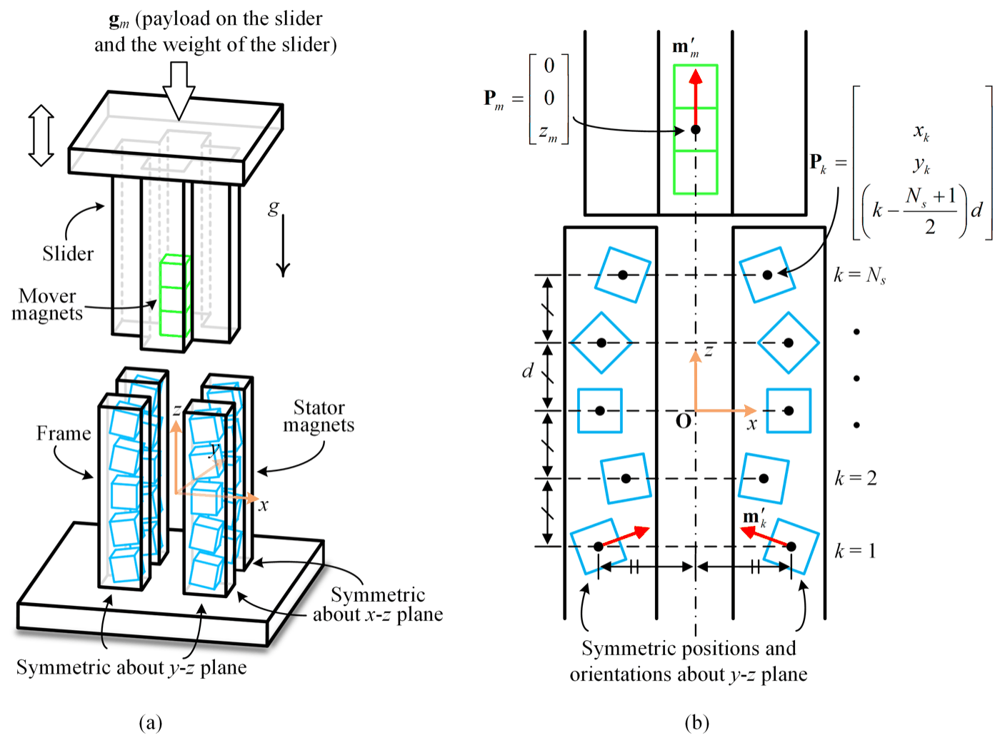
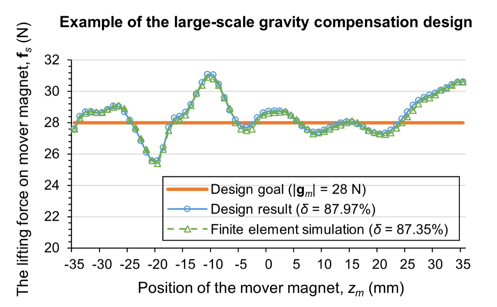

Research · Theme
Magnetic mechanisms
A pair of permanent magnets is a spring with no coil, no friction and no wear. Arranged in arrays, magnets can produce a force that follows almost any curve over a long stroke, which makes them a natural material for gravity compensation and passive levitation.
The work here starts from a computational method for the force between two magnets of general shape and magnetisation, and builds on it to optimise arrays for long-stroke linear compensation, a long-range passive levitator from only two magnets, and reconfigurable Halbach cylinders whose compensating torque can be tuned to the payload. Each design has been validated on a built prototype.




Representative work
Each paper below has its own page with a working animation of its mechanism. Each computes its curves from the paper’s own geometry rather than drawing them by hand.
- A reconfigurable Halbach cylinder for gravity compensation of variable rotational payloads. animation
Biggs, E., Kuo, C.-H. and Ren, T., ASME Journal of Mechanical Design, 2026. doi
A rotor magnet on the arm is balanced at every angle by the uniform field of an eight-magnet Halbach cylinder. One lever turns the geared array magnets, alternately by +ϕ and −ϕ, which scales the field by cos ϕ to suit a different payload. - Passive levitation in long vertical range using two permanent magnets. animation
Zeng, X., Li, S., Kuo, C.-H. and Sariyildiz, E., IEEE/ASME Transactions on Mechatronics, 2026. doi
A small cube magnet floats in a V-shaped trench cut into a larger magnet. The trench profile, found by optimisation, keeps the lift close to the load over three times the mover's side. - Design optimization and validation of a permanent-magnet array for gravity compensation in long-stroke linear motion. animation
Zeng, X., Kuo, C.-H. and Sariyildiz, E., Mechanism and Machine Theory, 2025. doi
Columns of tilted cube magnets lift a cubic mover with a nearly constant force over a stroke six times its height; the force curve beside the stroke stays close to the load. The positions and tilts were found by optimisation rather than by trial and error. - A computational approach for the analysis and synthesis of the interactive force between two general permanent magnets by using Monte Carlo integration. animation
Zeng, X., Kuo, C.-H. and Sariyildiz, E., IEEE Transactions on Magnetics, 2024. doi
Random points are thrown into boxes around two magnets of any shape; the pairs that fall inside both magnets add their dipole force, and the average converges to the force between the magnets.
Also under this theme
- A triple-magnet passive gravity compensator: sensitivity-based design and experimental validation.
Li, S., Zeng, X. and Kuo, C.-H., ASME Letters in Translational Robotics, 2026. doi
Three magnets: two fixed on a frame, the mover between them. As the mover rises the lower magnet's push weakens and the upper one's pull grows, so the lift stays nearly constant; the design search is cut from nine variables to two one-dimensional steps.
Figures on this page are the author's own drawings and photographs as published in the papers cited, reproduced here under the publishers' author reuse rights. Copyright remains with the respective publishers.